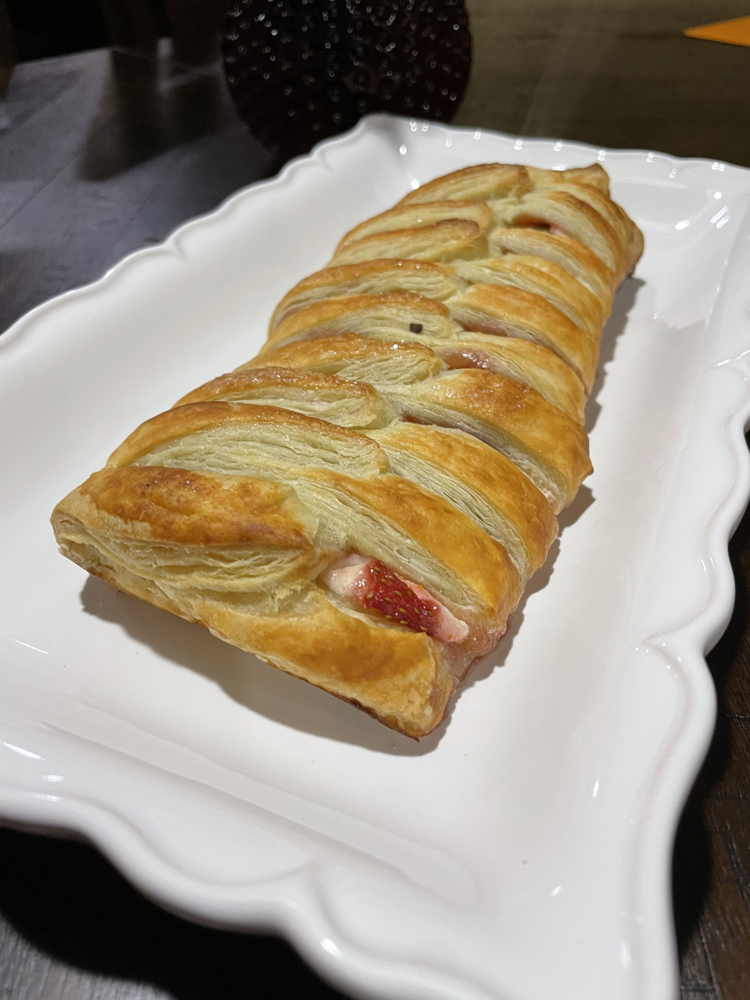
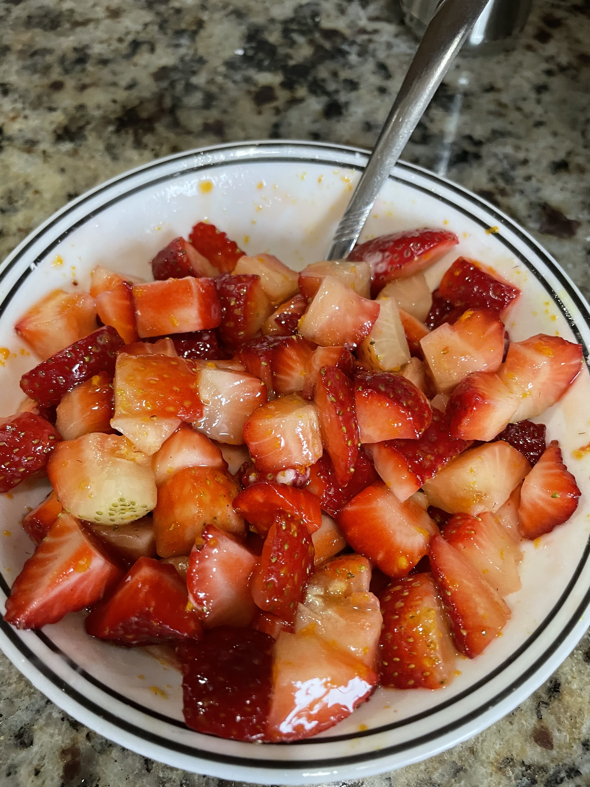
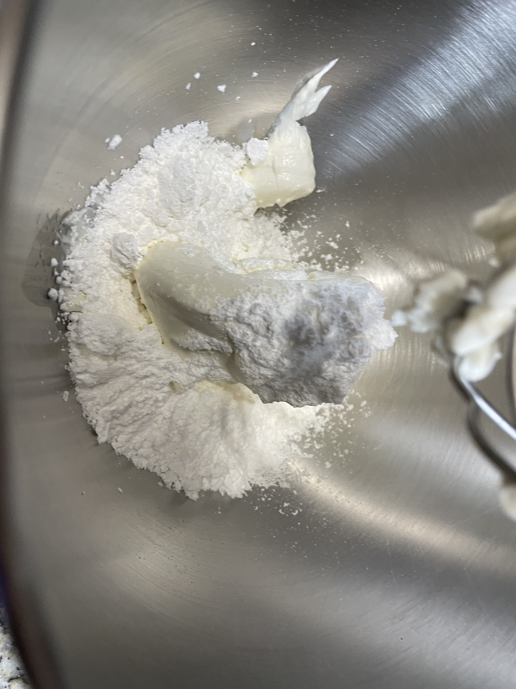
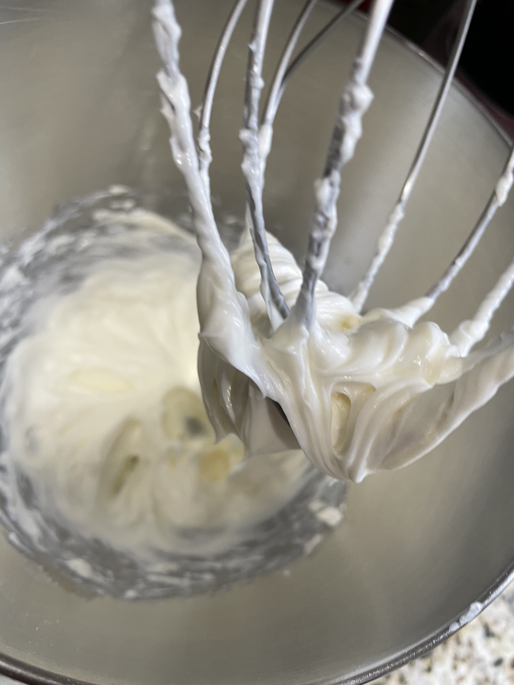
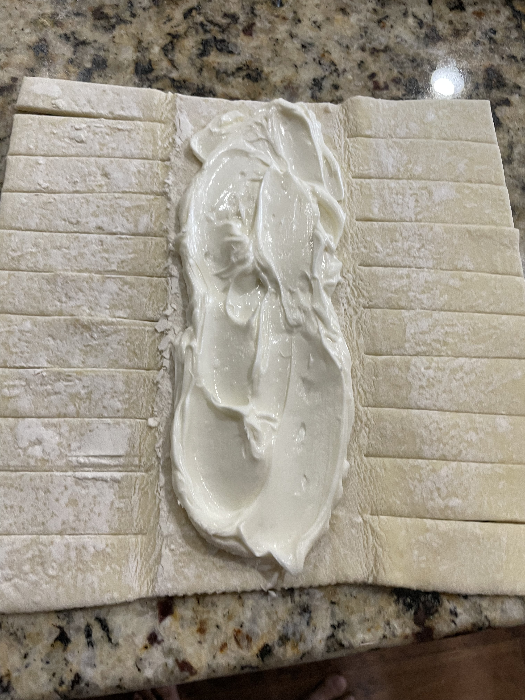
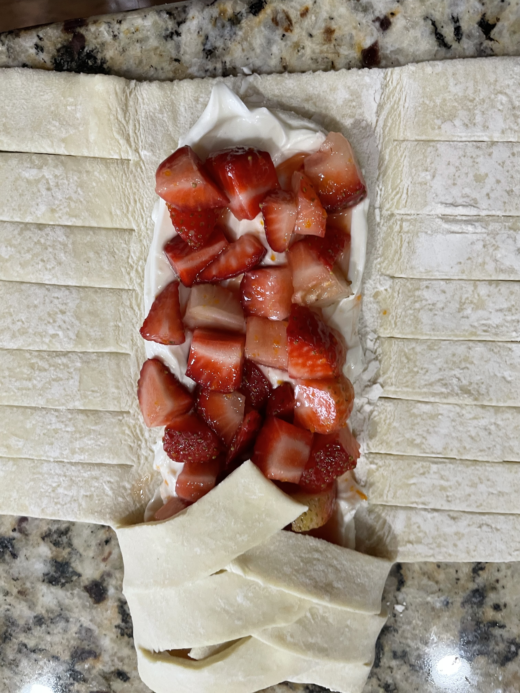
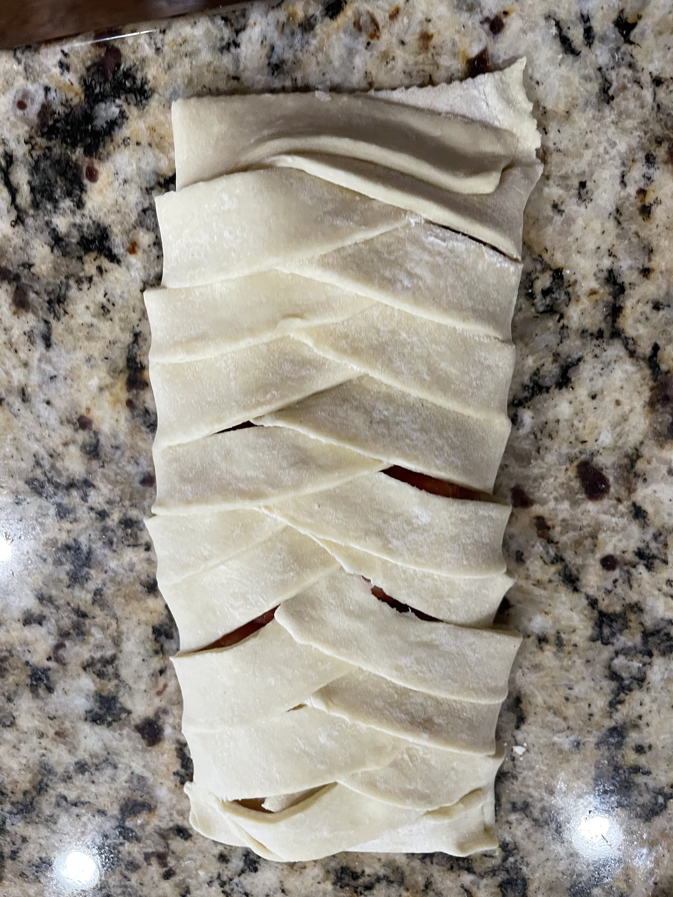

Strawberry Cream Cheese Puff
What is it?
This strawberry cream cheese puff has simple, homemade macerated strawberrys with a rich and dense cream cheese frosting for flavor tones of a danish. The base is a perfectly baked and flaky puff pastry sheet with a sugary crunch at the top. This simple yet decadent dish makes the perfect breakfast, brunch or snack for any occasion.Ingredients:
Strawberries
- 1.5 cup cubed strawberries
- About 1/2 cup any sugar
- 1 tbsp orange or any citrus zest, optional
- Optional splash of vanilla
Leftover liquid can be used as strawberry syrup
Cream Cheese Puff
- 1 cup softened cream cheese
- 1/2 cup powdered sugar
- 1 box puff pastry, two sheets room temperature
- 1 tbsp of milk for glaze
- 1 tbsp of granulated sugar to sprinkle
Recipe
Fillings
- Mix strawberries with 1/2 cup sugar, vanilla if using, zest if using, and let sit for atleast 15 minutes 
- Whisk softened cream cheese with powdered sugar until smooth frosting is formed  
Pastry Puff
- Preheat oven to 375 Fahrenheit
- Line a baking sheet with parchment paper
- Cut slits on side sections of pastry sheet to fold over
- Add cream cheese and spread evenly around center portion 
- Strain liquid from strawberries and add the solid chunks over the cream cheese
- Fold the slits one by one, alternating sides, to form the "braid" pattern  
- Brush exposed pastry with milk and sprinkle granulated sugar over the pastry
- Bake for 30 minutes, check after 25 for a nice golden crust